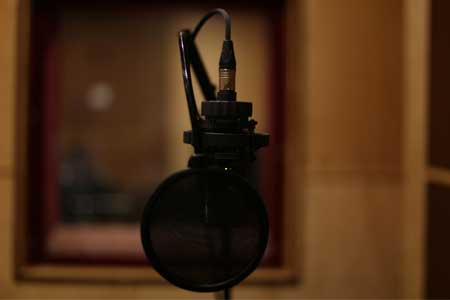
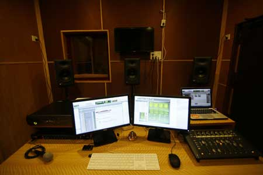

Film Post Production
- Sound Design
- ADR/Voice Over
- Track Lay (Fx sounds)
- Foley
- Stereo/5.1 Final Mix ]
Aural Workstation caters to the needs of both, a Recording Studio as well as a Post-Production facility. It consists of two fully equipped rooms designed to meet the needs of any project.
The Control Room offers a Pro Tools HDX system running Pro Tools HD 10 using the AVID HD I/O 8*8*8, which provides more power and higher audio quality to expand post production capabilities.
To ensure the Final Mix is of the utmost professional quality our JBL Monitoring system is precise and guarantees absolute accuracy at the mix position.
Our Monitoring system consists of the JBL LSR 4300 series :
- Left - Centre - Right Monitors - JBL 4328P
- Left Surround-Right Surround Monitors - JBL 4326P
- Subwoofer - JBL 4312SP
We are also equipped with a 8 x 6 ft. projector screen for video monitoring.
Carefully selected Sound effects can make all the difference to your video thereby opening up numerous sonic possibilities.The existing sound effects library at AW is exhaustive, of professional quality and caters to all media. We are constantly updating our audio data base in our endeavour to find and record sound effects that will be unique to each project.
Aural Workstation is an Audio Post one stop shop offering a full service for Film and Advertising audio Post Production including the final mix. Our central location, comfortable atmosphere and quick turnaround time makes our studio the ideal place to bring your work.